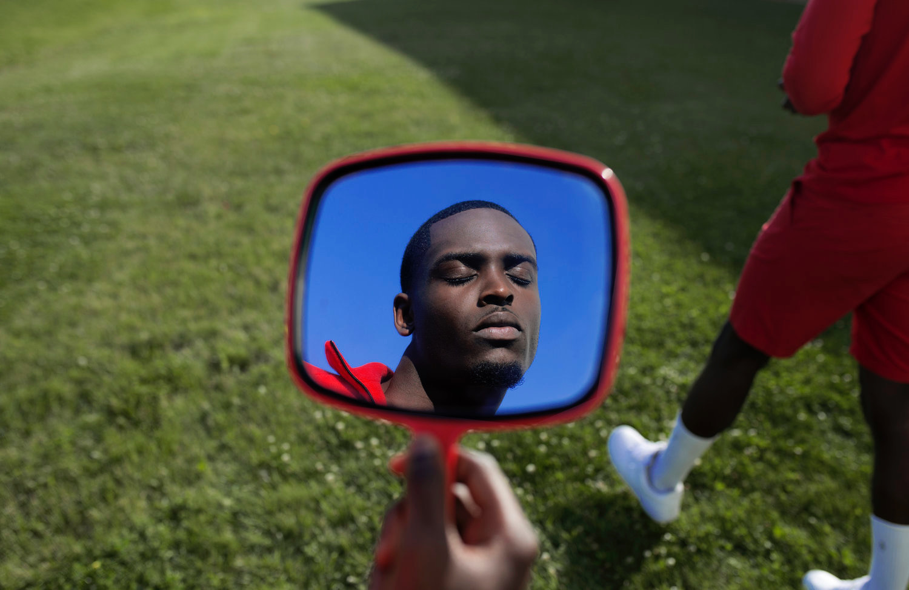

Practice Through every project, we aim to offer a different perspective through location, storyline, mood, etc. Click on the image to view the full project. By Sunday School Photos by Benedict
 Kinship Fourth project, Kinship is now live. Click on the image to view the full project. By Sunday School Photos by Benedict
Sister's Keeper At Sunday School, we believe in the importance of documenting relatable storylines and displaying authentic experiences. Click image to view full project. By Sunday School By Jeremy Rodney Hall